CODING AGENTS AS PIXEL WORLD MODELS
traex/GPT-6.1-Sol · 0164
点击播放 · 原生 RGB 像素
逐轮保存的候选
回放视频、检查图与代码变化。
每份候选均可单独播放。实际图片检查记录在下方工具轨迹中。
候选 01播放与检查图
点击播放 · 原生 RGB 像素
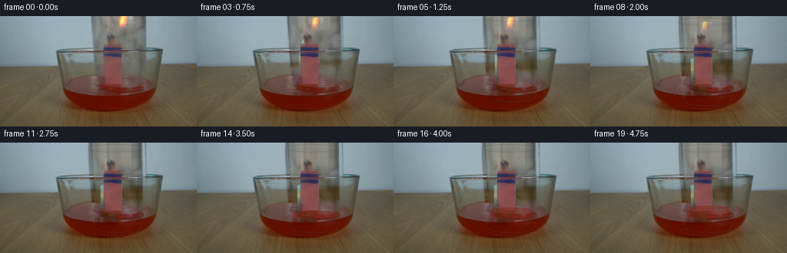
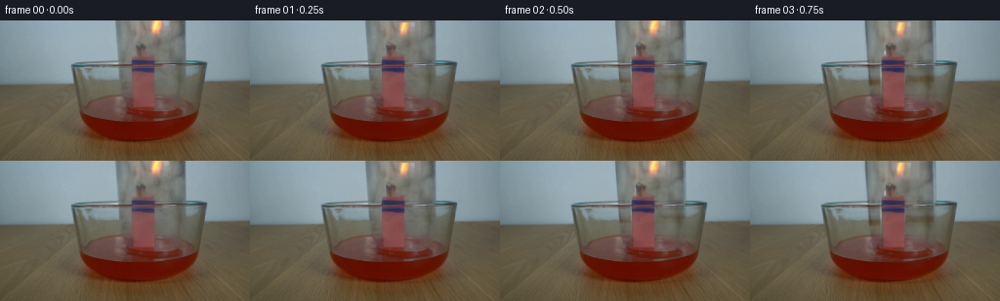
展开代码变化
--- 上一保存版本
+++ 本次保存版本
@@ -0,0 +1,189 @@
+from pathlib import Path
+import numpy as np
+import cv2
+from PIL import Image, ImageDraw, ImageFilter
+from scipy.ndimage import gaussian_filter, map_coordinates
+from artifact_io import save
+
+ROOT=Path(__file__).resolve().parent
+I=np.asarray(Image.open(ROOT/'first_frame.png').convert('RGB')).astype(np.float32)
+H,W=I.shape[:2]
+Y,X=np.mgrid[:H,:W].astype(np.float32)
+
+def smooth(a,b,x):
+ q=np.clip((x-a)/(b-a),0,1)
+ return q*q*(3-2*q)
+
+def maskpoly(points, blur=0.6):
+ m=Image.new('L',(W*4,H*4),0)
+ ImageDraw.Draw(m).polygon([(int(x*4),int(y*4)) for x,y in points],fill=255)
+ m=m.resize((W,H),Image.Resampling.LANCZOS)
+ if blur: m=m.filter(ImageFilter.GaussianBlur(blur))
+ return np.array(m,dtype=np.float32)/255
+
+# The jar is separated optically from the immobile tabletop, bowl and matches.
+# The lighting and photographed textures, rather than a new scene, supply its surface.
+jar0=maskpoly([(117.4,-20),(188.8,-20),(191.0,77),(189.5,88),(186.7,95.5),(176,100),(147,100),(131,96),(125.4,87),(121.4,42)],.7)
+# Reconstruct the unoccluded scene immediately behind the thin transparent vessel.
+base=I.copy()
+# Interpolate in the horizontal direction between the neighboring visible wall/bowl.
+for yy in range(0,100):
+ left=111 if yy<42 else 116
+ right=197 if yy<42 else 194
+ lc=np.mean(I[max(0,yy-1):min(H,yy+2),left-3:left+2],axis=(0,1))
+ rc=np.mean(I[max(0,yy-1):min(H,yy+2),right-1:right+4],axis=(0,1))
+ xx=np.arange(W,dtype=np.float32)
+ u=np.clip((xx-left)/(right-left),0,1)
+ interp=lc[None,:]*(1-u[:,None])+rc[None,:]*u[:,None]
+ # Keep the bowl's lip and the liquid surface as static photographic objects.
+ if 40<=yy<=48:
+ w=smooth(38,42,yy)*(1-smooth(46,50,yy))
+ # Bowl rim reconstruction follows its shallow ellipse.
+ nearby=I[yy,100:116].mean(axis=0)*.65+I[yy,194:203].mean(axis=0)*.35
+ interp=interp*(1-w*.60)+nearby*w*.60
+ alpha=jar0[yy,:,None]
+ base[yy]=base[yy]*(1-alpha)+interp*alpha
+
+# The bundle and holder stay fixed. Soft segmentation retains their photographic edges.
+objmask=maskpoly([(139,24),(149,23),(151,35),(158.4,36.2),(159.3,89.5),
+ (156,92),(135.0,91),(134.5,37),(139,35)],.35)
+# The bowl front, lip and water, seen through the jar, are not translated with it.
+staticmask=np.zeros((H,W),np.float32)
+staticmask += np.exp(-((Y-44.3)/1.1)**4)*smooth(75,83,X)*(1-smooth(205,212,X))
+staticmask=np.maximum(staticmask,objmask)
+staticmask=np.maximum(staticmask,smooth(80,99,Y))
+base=base*(1-staticmask[:,:,None])+I*staticmask[:,:,None]
+
+# Remove the match flame from the original texture so it can flutter and extinguish.
+firemask=((X>148)&(X<173)&(Y<22)).astype(np.uint8)*255
+nofire=cv2.inpaint(np.clip(I,0,255).astype(np.uint8),firemask,5,cv2.INPAINT_TELEA).astype(np.float32)
+# Broad warm glow is part of the luminous flame sprite.
+fdelta=(I-nofire)*((X>147)&(X<174)&(Y<23))[:,:,None]
+fdelta=np.maximum(fdelta,0)
+# Texture of the transparent jar without any moving foreground object.
+maskremove=np.zeros((H,W),np.uint8)
+cv2.rectangle(maskremove,(133,34),(161,95),255,-1)
+cv2.rectangle(maskremove,(136,22),(152,39),255,-1)
+clean=cv2.inpaint(nofire.astype(np.uint8),maskremove,7,cv2.INPAINT_TELEA).astype(np.float32)
+residual=(clean-base)*jar0[:,:,None]
+# Across the stationary bowl rim the glass transmission is interpolated vertically.
+for yy in range(40,49):
+ a=(yy-39)/10
+ residual[yy]=residual[39]*(1-a)+residual[49]*a
+# Below the water surface use only the thin side reflections, not the liquid itself.
+side=np.exp(-((X-(119+.07*Y))/3.0)**2)+np.exp(-((X-189)/3.0)**2)
+fade=smooth(70,94,Y)
+residual*=((1-fade)+fade*np.clip(side,0,1))[:,:,None]
+# A cleaned copy of the initial scene allows the initial and moving jar to be blended exactly.
+without=I-residual-fdelta
+
+# Subpixel image-layer sampling, with linear vertical extrapolation above the frame.
+def shift(a,dx,dy):
+ return np.stack([cv2.remap(a[:,:,c],(X-dx).astype(np.float32),(Y-dy).astype(np.float32),cv2.INTER_LINEAR,
+ borderMode=cv2.BORDER_REPLICATE) for c in range(a.shape[2])],axis=2)
+
+# Render the soft photographic glass details at 4x, then downsample.
+def glass_edges(out, dx, dy, amount):
+ S=4
+ layer=Image.new('RGBA',(W*S,H*S),(0,0,0,0))
+ d=ImageDraw.Draw(layer)
+ def line(points,fill,width=1):
+ d.line([(round((x+dx)*S),round((y+dy)*S)) for x,y in points],fill=fill,width=max(1,round(width*S)),joint='curve')
+ # Inverted closed base initially just outside the top of the camera.
+ top=-12.5+dy
+ if top>-5:
+ bbox=((118.7+dx)*S,(top-3.2)*S,(188.5+dx)*S,(top+5.5)*S)
+ d.ellipse(bbox,fill=(120,133,129,int(25*amount)),outline=(66,88,84,int(72*amount)),width=3)
+ d.arc(tuple(bbox),180,353,fill=(195,211,211,int(105*amount)),width=4)
+ d.arc(((120.8+dx)*S,(top-1.9)*S,(186.5+dx)*S,(top+3.0)*S),180,355,
+ fill=(204,215,213,int(48*amount)),width=3)
+ # Specular strips and the thick open mouth dipping into the water.
+ line([(118.6,-9),(119.7,28),(122.4,65),(125.5,87),(129.5,94)],(174,195,196,int(26*amount)),1.1)
+ line([(188.8,-10),(189.4,37),(190,73),(188,89),(184,95)],(211,220,218,int(33*amount)),.7)
+ bbox=((128+dx)*S,(88.5+dy)*S,(188.3+dx)*S,(99.0+dy)*S)
+ d.arc(bbox,0,180,fill=(47,53,43,int(86*amount)),width=5)
+ d.arc(((129+dx)*S,(89.5+dy)*S,(187+dx)*S,(98+dy)*S),0,177,
+ fill=(170,186,181,int(83*amount)),width=3)
+ d.arc(bbox,184,357,fill=(120,137,130,int(38*amount)),width=3)
+ layer=layer.filter(ImageFilter.GaussianBlur(.85*S)).resize((W,H),Image.Resampling.LANCZOS)
+ a=np.asarray(layer,dtype=np.float32)
+ return out*(1-a[:,:,3:]/255)+a[:,:,:3]*(a[:,:,3:]/255)
+
+frames=[]
+for k in range(20):
+ if k==0:
+ frames.append(I.astype(np.uint8));continue
+ t=k/4
+ descent=smooth(0,1.9,t)
+ dy=19.0*descent
+ dx=-4.1*descent
+ moved=shift(residual,dx,dy)
+ # Glass remains behind the stationary matches and the front of the bowl.
+ moved*= (1-.82*objmask[:,:,None])
+ # The front upper lip of the bowl is closer to camera than the jar.
+ lip=np.exp(-((Y-44.4)/.85)**4)*smooth(72,80,X)*(1-smooth(205,212,X))
+ moved*= (1-lip*.80)[:,:,None]
+ out=without+moved
+ # Where the match bundle was optically occluded, the residual originally had been
+ # suppressed, retaining the photographed matchbox rather than duplicating it.
+ out=out*(1-objmask[:,:,None]*.85)+nofire*objmask[:,:,None]*.85
+ out=glass_edges(out,dx,dy,smooth(0,1.3,t))
+
+ # Water gradually climbs inside the sealed mouth as the trapped air cools.
+ rise=12.0*smooth(2.45,4.65,t)
+ cx=156.7+dx
+ half=28.1
+ surf=96.8-rise
+ u=(X-cx)/half
+ valid=np.maximum(0,1-u*u)
+ back=surf-3.3*np.sqrt(valid)
+ front=surf+3.3*np.sqrt(valid)
+ inside=(1-smooth(.93,1.04,np.abs(u)))
+ fill=inside*smooth(back-.6,back+1.0,Y)*(1-smooth(107.8,111.2,Y))
+ # Only the additional column above the old surface is recolored.
+ added=fill*(1-smooth(97.0,100.0,Y))*smooth(0,3,rise)
+ col=np.zeros_like(I)
+ col[:,:,0]=114+10*np.cos((X-cx)/35)+.55*(Y-surf)
+ col[:,:,1]=37+.20*(Y-surf)
+ col[:,:,2]=23+.12*(Y-surf)
+ out=out*(1-added[:,:,None]*.47)+col*added[:,:,None]*.47
+ meniscus=inside*np.exp(-((Y-front)/.65)**2)*smooth(1,4,rise)
+ out=out*(1-meniscus[:,:,None]*.23)+np.array([137,84,68])*meniscus[:,:,None]*.23
+ # Weak circular ripples from the immersion, remaining within the liquid surface.
+ ripple=smooth(.25,.8,t)*(1-smooth(2.0,3.0,t))
+ if ripple>0:
+ r=np.sqrt(((X-cx)/1.0)**2+((Y-95)/.27)**2)
+ waves=np.exp(-((r-(21+10*t))/1.35)**2)-.55*np.exp(-((r-(24+10*t))/1.45)**2)
+ water=(1-smooth(196,205,X))*smooth(83,86,X)*smooth(85,92,Y)*(1-smooth(100,104,Y))
+ out+=waves[:,:,None]*water[:,:,None]*ripple*np.array([6,5,3])
+
+ # A flame dwindles after the mouth seals, rather than moving with the glass.
+ burn=1-smooth(1.50,2.75,t)
+ if burn>0:
+ sx=(.91+.055*np.sin(t*15))*max(.2,burn**.4)
+ sy=(.97+.045*np.sin(t*12+1))*max(.15,burn**.55)
+ rootx=145.5
+ rooty=28.0
+ # The flame leans back toward the match heads as the jar closes.
+ lean=-7.2*smooth(0,1.4,t)
+ mapx=rootx+(X-rootx-lean)/sx
+ mapy=rooty+(Y-rooty)/sy
+ f=np.stack([cv2.remap(fdelta[:,:,c],mapx.astype(np.float32),mapy.astype(np.float32),cv2.INTER_LINEAR,
+ borderMode=cv2.BORDER_CONSTANT) for c in range(3)],axis=2)
+ flick=.96+.05*np.sin(t*23)+.03*np.cos(t*37)
+ out+=f*burn*flick
+ # A small amber root is tucked immediately above the charred heads.
+ root=np.exp(-((X-(145+1.2*np.sin(t*13)))/2.1)**2-((Y-24.0)/3.0)**2)
+ out+=root[:,:,None]*burn*np.array([27,14,1])
+ # A faint, thin curl of smoke disperses inside the jar after extinction.
+ smokeamp=smooth(2.3,2.9,t)*(1-smooth(3.6,4.9,t))
+ if smokeamp>0:
+ yy=25-Y
+ center=144+2.1*np.sin(yy*.23-t*1.5)+yy*.055
+ smoke=np.exp(-((X-center)/(1.2+.10*np.maximum(yy,0)))**2)
+ smoke*=smooth(-1,2,yy)*(1-smooth(16,25,yy))
+ smoke*=smokeamp*.09
+ out=out*(1-smoke[:,:,None])+np.array([158,161,151])*smoke[:,:,None]
+ frames.append(np.clip(out,0,255).astype(np.uint8))
+frames=np.stack(frames)
+save(frames,ROOT)
候选 02播放与检查图
点击播放 · 原生 RGB 像素

展开代码变化
--- 上一保存版本
+++ 本次保存版本
@@ -44,6 +44,8 @@
alpha=jar0[yy,:,None]
base[yy]=base[yy]*(1-alpha)+interp*alpha
+background=base.copy()
+
# The bundle and holder stay fixed. Soft segmentation retains their photographic edges.
objmask=maskpoly([(139,24),(149,23),(151,35),(158.4,36.2),(159.3,89.5),
(156,92),(135.0,91),(134.5,37),(139,35)],.35)
@@ -65,7 +67,7 @@
cv2.rectangle(maskremove,(133,34),(161,95),255,-1)
cv2.rectangle(maskremove,(136,22),(152,39),255,-1)
clean=cv2.inpaint(nofire.astype(np.uint8),maskremove,7,cv2.INPAINT_TELEA).astype(np.float32)
-residual=(clean-base)*jar0[:,:,None]
+residual=clean-background
# Across the stationary bowl rim the glass transmission is interpolated vertically.
for yy in range(40,49):
a=(yy-39)/10
@@ -118,6 +120,7 @@
dy=19.0*descent
dx=-4.1*descent
moved=shift(residual,dx,dy)
+ moved*=smooth(-13.3+dy,-10.4+dy,Y)[:,:,None]
# Glass remains behind the stationary matches and the front of the bowl.
moved*= (1-.82*objmask[:,:,None])
# The front upper lip of the bowl is closer to camera than the jar.
候选 03播放与检查图
候选 04播放与检查图
点击播放 · 原生 RGB 像素
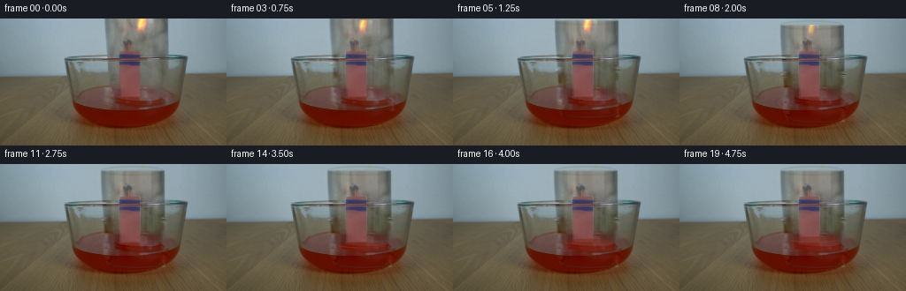
展开代码变化
--- 上一保存版本 +++ 本次保存版本 @@ -23,7 +23,7 @@ # The jar is separated optically from the immobile tabletop, bowl and matches. # The lighting and photographed textures, rather than a new scene, supply its surface. -jar0=maskpoly([(117.4,-20),(188.8,-20),(191.0,77),(189.5,88),(186.7,95.5),(176,100),(147,100),(131,96),(125.4,87),(121.4,42)],.7) +jar0=maskpoly([(113.5,-20),(195.5,-20),(195.5,77),(193.5,89),(190.7,97.5),(176,102),(147,102),(126,97),(121.4,88),(117.4,42)],.7) # Reconstruct the unoccluded scene immediately behind the thin transparent vessel. base=I.copy() # Interpolate in the horizontal direction between the neighboring visible wall/bowl. @@ -69,9 +69,13 @@ clean=cv2.inpaint(nofire.astype(np.uint8),maskremove,7,cv2.INPAINT_TELEA).astype(np.float32) residual=clean-background # Across the stationary bowl rim the glass transmission is interpolated vertically. -for yy in range(40,49): - a=(yy-39)/10 - residual[yy]=residual[39]*(1-a)+residual[49]*a +# The tabletop horizon and bowl rim are behind the glass, not attached to it. +# Preserve the narrow edge streaks; use a continuous translucent tint inside. +for yy in range(40,82): + a=(yy-39)/43 + level=residual[39]*(1-a)+residual[82]*a + edge=np.clip(np.exp(-((X[yy]-(119+.07*yy))/3.2)**2)+np.exp(-((X[yy]-189)/3.2)**2),0,1) + residual[yy]=level*(1-edge[:,None])+residual[yy]*edge[:,None] # Below the water surface use only the thin side reflections, not the liquid itself. side=np.exp(-((X-(119+.07*Y))/3.0)**2)+np.exp(-((X-189)/3.0)**2) fade=smooth(70,94,Y)
候选 05播放与检查图
点击播放 · 原生 RGB 像素
展开代码变化
--- 上一保存版本
+++ 本次保存版本
@@ -2,7 +2,6 @@
import numpy as np
import cv2
from PIL import Image, ImageDraw, ImageFilter
-from scipy.ndimage import gaussian_filter, map_coordinates
from artifact_io import save
ROOT=Path(__file__).resolve().parent
@@ -76,6 +75,11 @@
level=residual[39]*(1-a)+residual[82]*a
edge=np.clip(np.exp(-((X[yy]-(119+.07*yy))/3.2)**2)+np.exp(-((X[yy]-189)/3.2)**2),0,1)
residual[yy]=level*(1-edge[:,None])+residual[yy]*edge[:,None]
+for yy in range(40,51):
+ a=(yy-39)/12
+ residual[yy]=residual[39]*(1-a)+residual[51]*a
+# Only the optical vessel is translated; outside the photographed sides is zero.
+residual*=jar0[:,:,None]
# Below the water surface use only the thin side reflections, not the liquid itself.
side=np.exp(-((X-(119+.07*Y))/3.0)**2)+np.exp(-((X-189)/3.0)**2)
fade=smooth(70,94,Y)
@@ -178,6 +182,11 @@
f=np.stack([cv2.remap(fdelta[:,:,c],mapx.astype(np.float32),mapy.astype(np.float32),cv2.INTER_LINEAR,
borderMode=cv2.BORDER_CONSTANT) for c in range(3)],axis=2)
flick=.96+.05*np.sin(t*23)+.03*np.cos(t*37)
+ # The source flame extends out of the upper frame. Continue it analytically
+ # instead of creating a hard rectangular cut when the flame shortens.
+ cap=smooth(1.1,-1.1,mapy) if False else 1-smooth(-1.1,1.1,mapy)
+ cap*=np.exp(-((mapx-161.4)/3.45)**2)
+ f+=cap[:,:,None]*np.array([130,75,8])[None,None,:]
out+=f*burn*flick
# A small amber root is tucked immediately above the charred heads.
root=np.exp(-((X-(145+1.2*np.sin(t*13)))/2.1)**2-((Y-24.0)/3.0)**2)

候选 07播放与检查图
点击播放 · 原生 RGB 像素

展开代码变化
--- 上一保存版本
+++ 本次保存版本
@@ -172,7 +172,7 @@
burn=1-smooth(1.50,2.75,t)
if burn>0:
sx=(.91+.055*np.sin(t*15))*max(.2,burn**.4)
- sy=(.97+.045*np.sin(t*12+1))*max(.15,burn**.55)
+ sy=(.97+.045*np.sin(t*12+1))*max(.15,burn**.55)*(1-.30*descent)
rootx=145.5
rooty=28.0
# The flame leans back toward the match heads as the jar closes.
@@ -184,7 +184,7 @@
flick=.96+.05*np.sin(t*23)+.03*np.cos(t*37)
# The source flame extends out of the upper frame. Continue it analytically
# instead of creating a hard rectangular cut when the flame shortens.
- cap=smooth(1.1,-1.1,mapy) if False else 1-smooth(-1.1,1.1,mapy)
+ cap=(1-smooth(-1.1,1.1,mapy))*smooth(-7,-1,mapy)
cap*=np.exp(-((mapx-161.4)/3.45)**2)
f+=cap[:,:,None]*np.array([130,75,8])[None,None,:]
out+=f*burn*flick
候选 08播放与检查图
可观测工具轨迹
实际执行的命令与返回图片。
命令 1exit 0
/bin/bash -lc "cat prompt.txt && printf '\\n---RULES---\\n' && cat GENERATION_RULES.md && printf '\\n---FILES---\\n' && ls -la"
命令 2exit 0
/bin/bash -lc "cat artifact_io.py && python - <<'PY'
from PIL import Image
im=Image.open('first_frame.png'); print(im.size); im.resize((1024,576)).save('.tmp/first_big.png')
PY"命令 3exit 0
/bin/bash -lc "python - <<'PY'
from PIL import Image
im=Image.open('first_frame.png')
im.crop((110,0,200,104)).resize((540,624)).save('.tmp/crop.png')
PY"命令 4exit 0
/bin/bash -lc "python - <<'PY'
import cv2,numpy as np
from PIL import Image
im=np.array(Image.open('first_frame.png'))
y,x=np.mgrid[:144,:256]
obj=np.zeros((144,256),np.uint8)
# object-free image for glass
cv2.rectangle(obj,(134,35),(160,94),255,-1)
cv2.rectangle(obj,(136,22),(151,39),255,-1)
cv2.ellipse(obj,(160,5),(12,21),-10,0,360,255,-1)
c=cv2.inpaint(im,obj,5,cv2.INPAINT_TELEA)
Image.fromarray(c).resize((1024,576)).save('.tmp/glass_clean.png')
PY"命令 5exit 0
/bin/bash -lc "python - <<'PY'
from PIL import Image,ImageDraw
im=Image.open('first_frame.png').resize((1024,576));d=ImageDraw.Draw(im)
for x in range(0,256,10):
d.line((x*4,0,x*4,576),fill=(255,255,255,75),width=1); d.text((x*4+1,2),str(x),fill='white')
for y in range(0,144,10):
d.line((0,y*4,1024,y*4),fill=(255,255,255,75),width=1);d.text((0,y*4+2),str(y),fill='white')
im.save('.tmp/grid.png')
PY"命令 6exit 1
/bin/bash -lc "cat > generate.py <<'PY'
from pathlib import Path
import numpy as np
import cv2
from PIL import Image, ImageDraw, ImageFilter
from scipy.ndimage import gaussian_filter, map_coordinates
from artifact_io import save
ROOT=Path(__file__).resolve().parent
I=np.asarray(Image.open(ROOT/'first_frame.png').convert('RGB')).astype(np.float32)
H,W=I.shape[:2]
Y,X=np.mgrid[:H,:W].astype(np.float32)
def smooth(a,b,x):
q=np.clip((x-a)/(b-a),0,1)
return q*q*(3-2*q)
def maskpoly(points, blur=0.6):
m=Image.new('L',(W*4,H*4),0)
ImageDraw.Draw(m).polygon([(int(x*4),int(y*4)) for x,y in points],fill=255)
m=m.resize((W,H),Image.Resampling.LANCZOS)
if blur: m=m.filter(ImageFilter.GaussianBlur(blur))
return np.array(m,dtype=np.float32)/255
# The jar is separated optically from the immobile tabletop, bowl and matches.
# The lighting and photographed textures, rather than a new scene, supply its surface.
jar0=maskpoly([(117.4,-20),(188.8,-20),(191.0,77),(189.5,88),(186.7,95.5),(176,100),(147,100),(131,96),(125.4,87),(121.4,42)],.7)
# Reconstruct the unoccluded scene immediately behind the thin transparent vessel.
base=I.copy()
# Interpolate in the horizontal direction between the neighboring visible wall/bowl.
for yy in range(0,100):
left=111 if yy<42 else 116
right=197 if yy<42 else 194
lc=np.mean(I[max(0,yy-1):min(H,yy+2),left-3:left+2],axis=(0,1))
rc=np.mean(I[max(0,yy-1):min(H,yy+2),right-1:right+4],axis=(0,1))
xx=np.arange(W,dtype=np.float32)
u=np.clip((xx-left)/(right-left),0,1)
interp=lc[None,:]*(1-u[:,None])+rc[None,:]*u[:,None]
# Keep the bowl's lip and the liquid surface as static photographic objects.
if 40<=yy<=48:
w=smooth(38,42,yy)*(1-smooth(46,50,yy))
# Bowl rim reconstruction follows its shallow ellipse.
nearby=I[yy,100:116].mean(axis=0)*.65+I[yy,194:203].mean(axis=0)*.35
interp=interp*(1-w*.60)+nearby*w*.60
alpha=jar0[yy,:,None]
base[yy]=base[yy]*(1-alpha)+interp*alpha
# The bundle and holder stay fixed. Soft segmentation retains their photographic edges.
objmask=maskpoly([(139,24),(149,23),(151,35),(158.4,36.2),(159.3,89.5),
(156,92),(135.0,91),(134.5,37),(139,35)],.35)
# The bowl front, lip and water, seen through the jar, are not translated with it.
staticmask=np.zeros((H,W),np.float32)
staticmask += np.exp(-((Y-44.3)/1.1)**4)*smooth(75,83,X)*(1-smooth(205,212,X))
staticmask=np.maximum(staticmask,objmask)
staticmask=np.maximum(staticmask,smooth(80,99,Y))
base=base*(1-staticmask[:,:,None])+I*staticmask[:,:,None]
# Remove the match flame from the original texture so it can flutter and extinguish.
firemask=((X>148)&(X<173)&(Y<22)).astype(np.uint8)*255
nofire=cv2.inpaint(np.clip(I,0,255).astype(np.uint8),firemask,5,cv2.INPAINT_TELEA).astype(np.float32)
# Broad warm glow is part of the luminous flame sprite.
fdelta=(I-nofire)*((X>147)&(X<174)&(Y<23))[:,:,None]
fdelta=np.maximum(fdelta,0)
# Texture of the transparent jar without any moving foreground object.
maskremove=np.zeros((H,W),np.uint8)
cv2.rectangle(maskremove,(133,34),(161,95),255,-1)
cv2.rectangle(maskremove,(136,22),(152,39),255,-1)
clean=cv2.inpaint(nofire.astype(np.uint8),maskremove,7,cv2.INPAINT_TELEA).astype(np.float32)
residual=(clean-base)*jar0[:,:,None]
# Across the stationary bowl rim the glass transmission is interpolated vertically.
for yy in range(40,49):
a=(yy-39)/10
residual[yy]=residual[39]*(1-a)+residual[49]*a
# Below the water surface use only the thin side reflections, not the liquid itself.
side=np.exp(-((X-(119+.07*Y))/3.0)**2)+np.exp(-((X-189)/3.0)**2)
fade=smooth(70,94,Y)
residual*=((1-fade)+fade*np.clip(side,0,1))[:,:,None]
# A cleaned copy of the initial scene allows the initial and moving jar to be blended exactly.
without=I-residual-fdelta
# Subpixel image-layer sampling, with linear vertical extrapolation above the frame.
def shift(a,dx,dy):
return np.stack([cv2.remap(a[:,:,c],X-dx,Y-dy,cv2.INTER_LINEAR,
borderMode=cv2.BORDER_REPLICATE) for c in range(a.shape[2])],axis=2)
# Render the soft photographic glass details at 4x, then downsample.
def glass_edges(out, dx, dy, amount):
S=4
layer=Image.new('RGBA',(W*S,H*S),(0,0,0,0))
d=ImageDraw.Draw(layer)
def line(points,fill,width=1):
d.line([(round((x+dx)*S),round((y+dy)*S)) for x,y in points],fill=fill,width=max(1,round(width*S)),joint='curve')
# Inverted closed base initially just outside the top of the camera.
top=-12.5+dy
if top>-5:
bbox=((118.7+dx)*S,(top-3.2)*S,(188.5+dx)*S,(top+5.5)*S)
d.ellipse(bbox,fill=(120,133,129,int(25*amount)),outline=(66,88,84,int(72*amount)),width=3)
d.arc(tuple(bbox),180,353,fill=(195,211,211,int(105*amount)),width=4)
d.arc(((120.8+dx)*S,(top-1.9)*S,(186.5+dx)*S,(top+3.0)*S),180,355,
fill=(204,215,213,int(48*amount)),width=3)
# Specular strips and the thick open mouth dipping into the water.
line([(118.6,-9),(119.7,28),(122.4,65),(125.5,87),(129.5,94)],(174,195,196,int(26*amount)),1.1)
line([(188.8,-10),(189.4,37),(190,73),(188,89),(184,95)],(211,220,218,int(33*amount)),.7)
bbox=((128+dx)*S,(88.5+dy)*S,(188.3+dx)*S,(99.0+dy)*S)
d.arc(bbox,0,180,fill=(47,53,43,int(86*amount)),width=5)
d.arc(((129+dx)*S,(89.5+dy)*S,(187+dx)*S,(98+dy)*S),0,177,
fill=(170,186,181,int(83*amount)),width=3)
d.arc(bbox,184,357,fill=(120,137,130,int(38*amount)),width=3)
layer=layer.filter(ImageFilter.GaussianBlur(.85*S)).resize((W,H),Image.Resampling.LANCZOS)
a=np.asarray(layer,dtype=np.float32)
return out*(1-a[:,:,3:]/255)+a[:,:,:3]*(a[:,:,3:]/255)
frames=[]
for k in range(20):
if k==0:
frames.append(I.astype(np.uint8));continue
t=k/4
descent=smooth(0,1.9,t)
dy=19.0*descent
dx=-4.1*descent
moved=shift(residual,dx,dy)
# Glass remains behind the stationary matches and the front of the bowl.
moved*= (1-.82*objmask[:,:,None])
# The front upper lip of the bowl is closer to camera than the jar.
lip=np.exp(-((Y-44.4)/.85)**4)*smooth(72,80,X)*(1-smooth(205,212,X))
moved*= (1-lip*.80)[:,:,None]
out=without+moved
# Where the match bundle was optically occluded, the residual originally had been
# suppressed, retaining the photographed matchbox rather than duplicating it.
out=out*(1-objmask[:,:,None]*.85)+nofire*objmask[:,:,None]*.85
out=glass_edges(out,dx,dy,smooth(0,1.3,t))
# Water gradually climbs inside the sealed mouth as the trapped air cools.
rise=12.0*smooth(2.45,4.65,t)
cx=156.7+dx
half=28.1
surf=96.8-rise
u=(X-cx)/half
valid=np.maximum(0,1-u*u)
back=surf-3.3*np.sqrt(valid)
front=surf+3.3*np.sqrt(valid)
inside=(1-smooth(.93,1.04,np.abs(u)))
fill=inside*smooth(back-.6,back+1.0,Y)*(1-smooth(107.8,111.2,Y))
# Only the additional column above the old surface is recolored.
added=fill*(1-smooth(97.0,100.0,Y))*smooth(0,3,rise)
col=np.zeros_like(I)
col[:,:,0]=114+10*np.cos((X-cx)/35)+.55*(Y-surf)
col[:,:,1]=37+.20*(Y-surf)
col[:,:,2]=23+.12*(Y-surf)
out=out*(1-added[:,:,None]*.47)+col*added[:,:,None]*.47
meniscus=inside*np.exp(-((Y-front)/.65)**2)*smooth(1,4,rise)
out=out*(1-meniscus[:,:,None]*.23)+np.array([137,84,68])*meniscus[:,:,None]*.23
# Weak circular ripples from the immersion, remaining within the liquid surface.
ripple=smooth(.25,.8,t)*(1-smooth(2.0,3.0,t))
if ripple>0:
r=np.sqrt(((X-cx)/1.0)**2+((Y-95)/.27)**2)
waves=np.exp(-((r-(21+10*t))/1.35)**2)-.55*np.exp(-((r-(24+10*t))/1.45)**2)
water=(1-smooth(196,205,X))*smooth(83,86,X)*smooth(85,92,Y)*(1-smooth(100,104,Y))
out+=waves[:,:,None]*water[:,:,None]*ripple*np.array([6,5,3])
# A flame dwindles after the mouth seals, rather than moving with the glass.
burn=1-smooth(1.50,2.75,t)
if burn>0:
sx=(.91+.055*np.sin(t*15))*max(.2,burn**.4)
sy=(.97+.045*np.sin(t*12+1))*max(.15,burn**.55)
rootx=145.5
rooty=28.0
# The flame leans back toward the match heads as the jar closes.
lean=-7.2*smooth(0,1.4,t)
mapx=rootx+(X-rootx-lean)/sx
mapy=rooty+(Y-rooty)/sy
f=np.stack([cv2.remap(fdelta[:,:,c],mapx,mapy,cv2.INTER_LINEAR,
borderMode=cv2.BORDER_CONSTANT) for c in range(3)],axis=2)
flick=.96+.05*np.sin(t*23)+.03*np.cos(t*37)
out+=f*burn*flick
# A small amber root is tucked immediately above the charred heads.
root=np.exp(-((X-(145+1.2*np.sin(t*13)))/2.1)**2-((Y-24.0)/3.0)**2)
out+=root[:,:,None]*burn*np.array([27,14,1])
# A faint, thin curl of smoke disperses inside the jar after extinction.
smokeamp=smooth(2.3,2.9,t)*(1-smooth(3.6,4.9,t))
if smokeamp>0:
yy=25-Y
center=144+2.1*np.sin(yy*.23-t*1.5)+yy*.055
smoke=np.exp(-((X-center)/(1.2+.10*np.maximum(yy,0)))**2)
smoke*=smooth(-1,2,yy)*(1-smooth(16,25,yy))
smoke*=smokeamp*.09
out=out*(1-smoke[:,:,None])+np.array([158,161,151])*smoke[:,:,None]
frames.append(np.clip(out,0,255).astype(np.uint8))
frames=np.stack(frames)
save(frames,ROOT)
PY
python generate.py"命令 7exit 0
/bin/bash -lc "sed -i 's/a\\[:,:,c\\],X-dx,Y-dy/a[:,:,c],(X-dx).astype(np.float32),(Y-dy).astype(np.float32)/;s/fdelta\\[:,:,c\\],mapx,mapy/fdelta[:,:,c],mapx.astype(np.float32),mapy.astype(np.float32)/' generate.py python generate.py"
命令 8exit 0
/bin/bash -lc "python - <<'PY'
from PIL import Image
for i in [1,5,10,19]:
Image.open('frames/%02d.png'%i).resize((1024,576)).save('.tmp/big%02d.png'%i)
PY"命令 9exit 0
/bin/bash -lc "python - <<'PY'
p='generate.py'
s=open(p).read().replace('# The bundle and holder stay fixed.', 'background=base.copy()\\n\\n# The bundle and holder stay fixed.')
s=s.replace('residual=(clean-base)*jar0[:,:,None]', 'residual=clean-background')
s=s.replace('moved=shift(residual,dx,dy)', 'moved=shift(residual,dx,dy)\\n moved*=smooth(-13.3+dy,-10.4+dy,Y)[:,:,None]')
# Initial residual below fluid should remain fixed, removal should match full surface
# sample clean glass is getting stationary rim on moving inpaint: replace stronger samples in y40-49.
open(p,'w').write(s)
PY
python generate.py
python - <<'PY'
from PIL import Image
Image.open('frames/19.png').resize((1024,576)).save('.tmp/rev19.png')
PY"命令 10exit 0
/bin/bash -lc "python - <<'PY'
p='generate.py'
s=open(p).read()
s=s.replace('[(117.4,-20),(188.8,-20),(191.0,77),(189.5,88),(186.7,95.5),(176,100),(147,100),(131,96),(125.4,87),(121.4,42)]','[(113.5,-20),(195.5,-20),(195.5,77),(193.5,89),(190.7,97.5),(176,102),(147,102),(126,97),(121.4,88),(117.4,42)]')
s=s.replace('for yy in range(40,49):\\n a=(yy-39)/10\\n residual[yy]=residual[39]*(1-a)+residual[49]*a','''# The tabletop horizon and bowl rim are behind the glass, not attached to it.
# Preserve the narrow edge streaks; use a continuous translucent tint inside.
for yy in range(40,82):
a=(yy-39)/43
level=residual[39]*(1-a)+residual[82]*a
edge=np.clip(np.exp(-((X[yy]-(119+.07*yy))/3.2)**2)+np.exp(-((X[yy]-189)/3.2)**2),0,1)
residual[yy]=level*(1-edge[:,None])+residual[yy]*edge[:,None]''')
open(p,'w').write(s)
PY
python generate.py
python - <<'PY'
from PIL import Image
Image.open('frames/19.png').resize((1024,576)).save('.tmp/rev2.png')
PY"命令 11exit 0
/bin/bash -lc "python - <<'PY'
p='generate.py';s=open(p).read()
s=s.replace('residual[yy]=level*(1-edge[:,None])+residual[yy]*edge[:,None]','''residual[yy]=level*(1-edge[:,None])+residual[yy]*edge[:,None]
for yy in range(40,51):
a=(yy-39)/12
residual[yy]=residual[39]*(1-a)+residual[51]*a
# Only the optical vessel is translated; outside the photographed sides is zero.
residual*=jar0[:,:,None]''')
s=s.replace('mapx=rootx+(X-rootx-lean)/sx','mapx=rootx+(X-rootx-lean)/sx').replace('out+=f*burn*flick','''# The source flame extends out of the upper frame. Continue it analytically
# instead of creating a hard rectangular cut when the flame shortens.
cap=smooth(1.1,-1.1,mapy) if False else 1-smooth(-1.1,1.1,mapy)
cap*=np.exp(-((mapx-161.4)/3.45)**2)
f+=cap[:,:,None]*np.array([130,75,8])[None,None,:]
out+=f*burn*flick''')
s=s.replace('from scipy.ndimage import gaussian_filter, map_coordinates\\n','')
open(p,'w').write(s)
PY
python generate.py
python - <<'PY'
from PIL import Image
import numpy as np
f=np.stack([np.asarray(Image.open('frames/%02d.png'%i)) for i in range(20)])
assert f.shape==(20,144,256,3) and f.dtype==np.uint8
assert np.array_equal(f[0],np.asarray(Image.open('first_frame.png')))
print('validated', f.shape)
PY"命令 12exit 0
/bin/bash -lc "python - <<'PY'
p='generate.py';s=open(p).read().replace('max(.15,burn**.55)','max(.15,burn**.55)*(1-.30*descent)').replace('cap=smooth(1.1,-1.1,mapy) if False else 1-smooth(-1.1,1.1,mapy)','cap=(1-smooth(-1.1,1.1,mapy))*smooth(-7,-1,mapy)')
open(p,'w').write(s)
PY
python generate.py"视觉工具实际返回图片 1
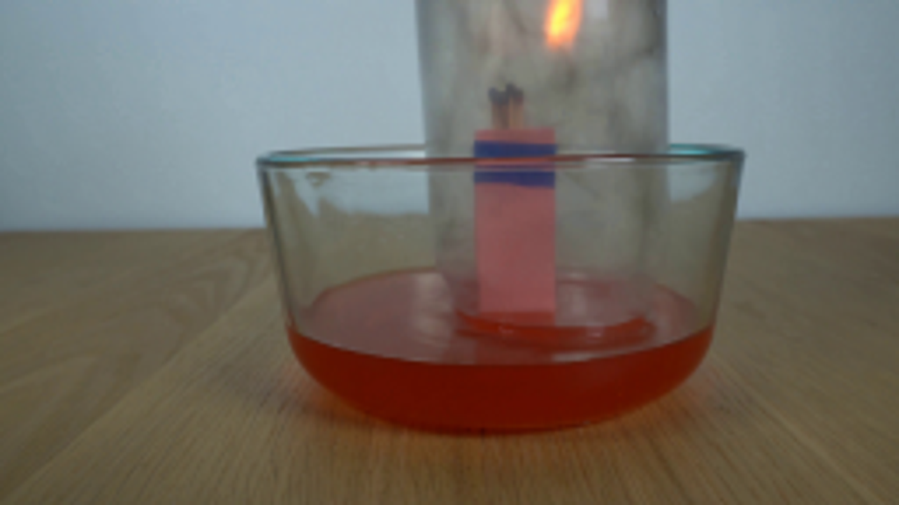
视觉工具实际返回图片 2
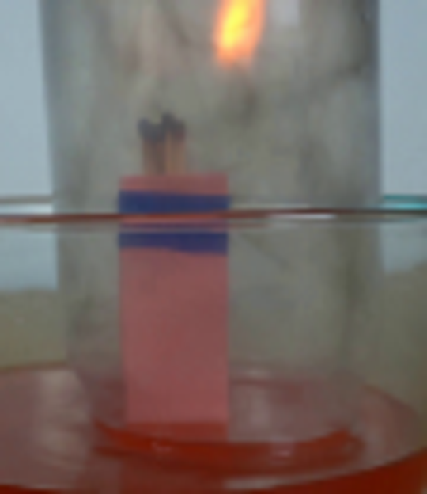
视觉工具实际返回图片 3
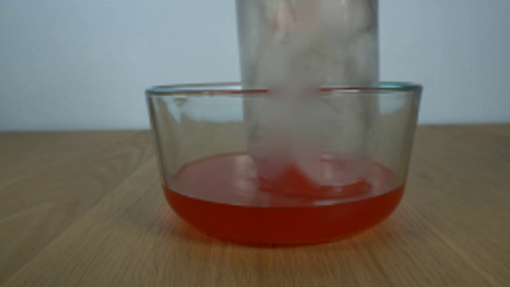
视觉工具实际返回图片 4
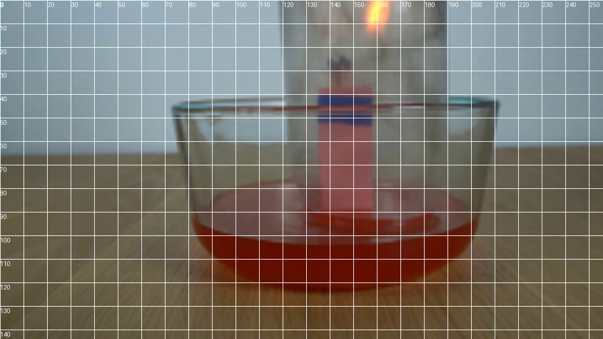
视觉工具实际返回图片 5

视觉工具实际返回图片 6
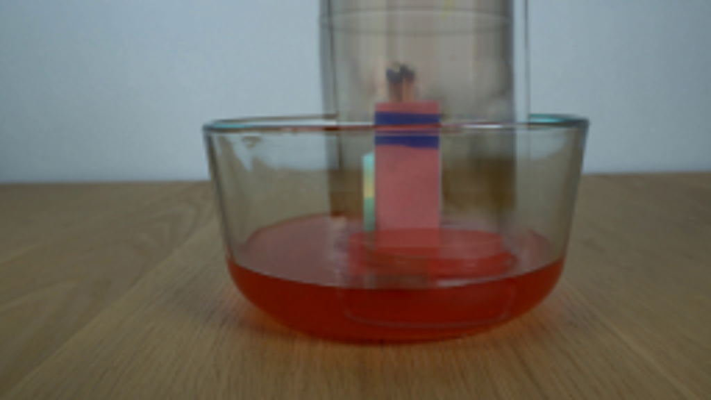
视觉工具实际返回图片 7
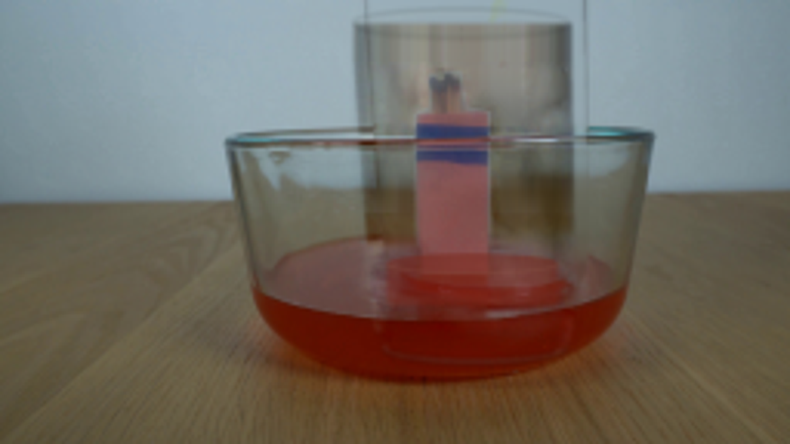
视觉工具实际返回图片 8
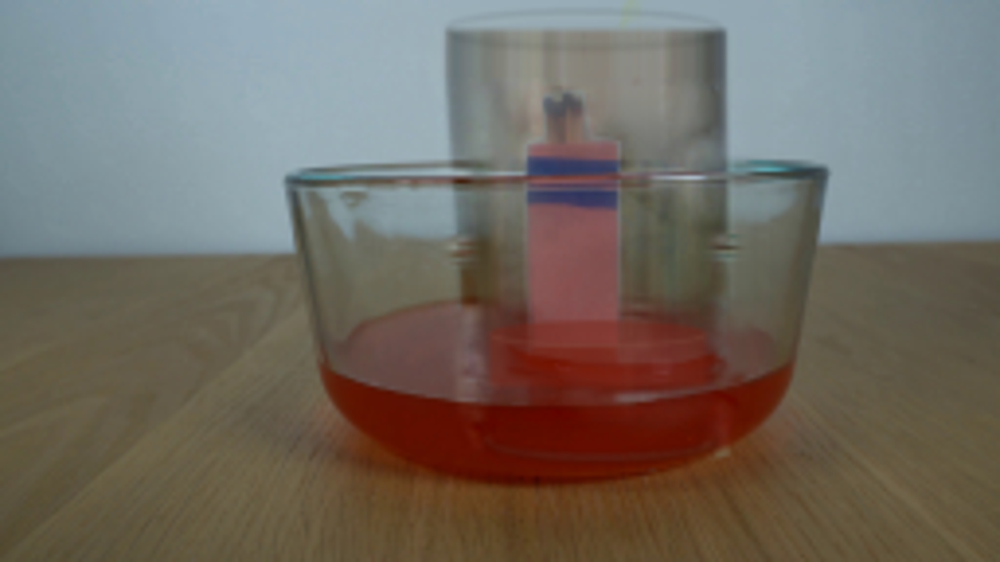
视觉工具实际返回图片 9
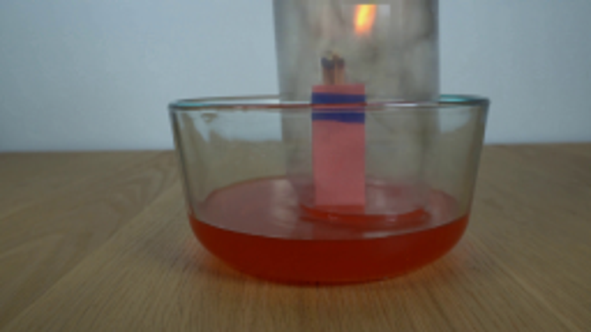
视觉工具实际返回图片 10
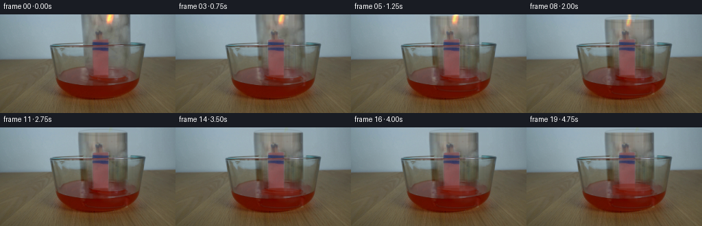
保存候选 8 份；完成命令 12 次；可验证图片返回 10 张。原始 API 响应与完整日志保留在本地。